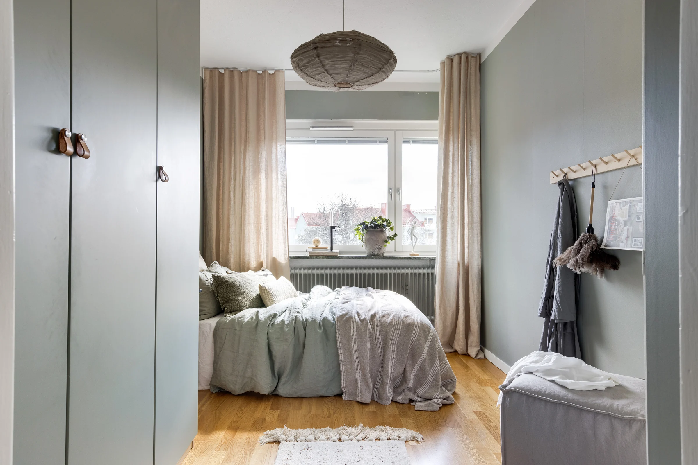
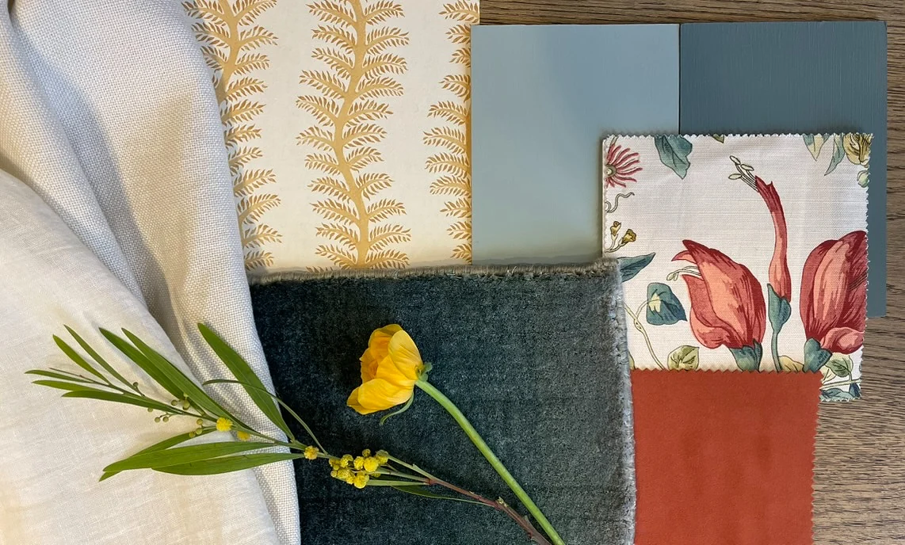

Rum att känna
sig hemma i.
Inredning, textil och hantverk.
Personliga miljöer sedan 2004.
Din stil.
Vår känsla för helheten.
De bästa rummen börjar med människorna som ska vara i dem.
Vi är LivingIn – inredare, sömmerskor och snickare med bas i Uppsala. Sedan 2004 hjälper vi privatpersoner och företag att hitta sin egen röda tråd, från första färgprovet till den sista detaljen.
Lär känna ossEn helhet.
Flera sätt att börja.
Ett litet lyft eller ett stort projekt.
Vi tar hand om båda.

Platser med
personlighet.
Alla inspirationsbilderBodarna, Uppsala
Köksrenovering med ny planlösning.
Salong Syster & Bror
Färg och karaktär för en arbetsplats.

En färg.
En struktur.
En känsla.
Det är i mötet mellan materialen som rummet tar form. Upptäck våra tyger, vår sömnad och de små valen som gör stor skillnad.
Upptäck textil & sömnad8 recensioner på Google
Förtroende som
gör oss stolta.
Se omdömen på Google (öppnas i ny flik)Google-betyg kontrollerat 5 oktober 2026.Följ det som växer fram.
@livinginuppsala (öppnas i ny flik)

Materialval, rum och detaljer från LivingIn. Mer inspiration på Instagram.
Vad vill du förändra?
Ett rum, ett hem eller en helt ny arbetsplats.
Berätta vad du har i tankarna.